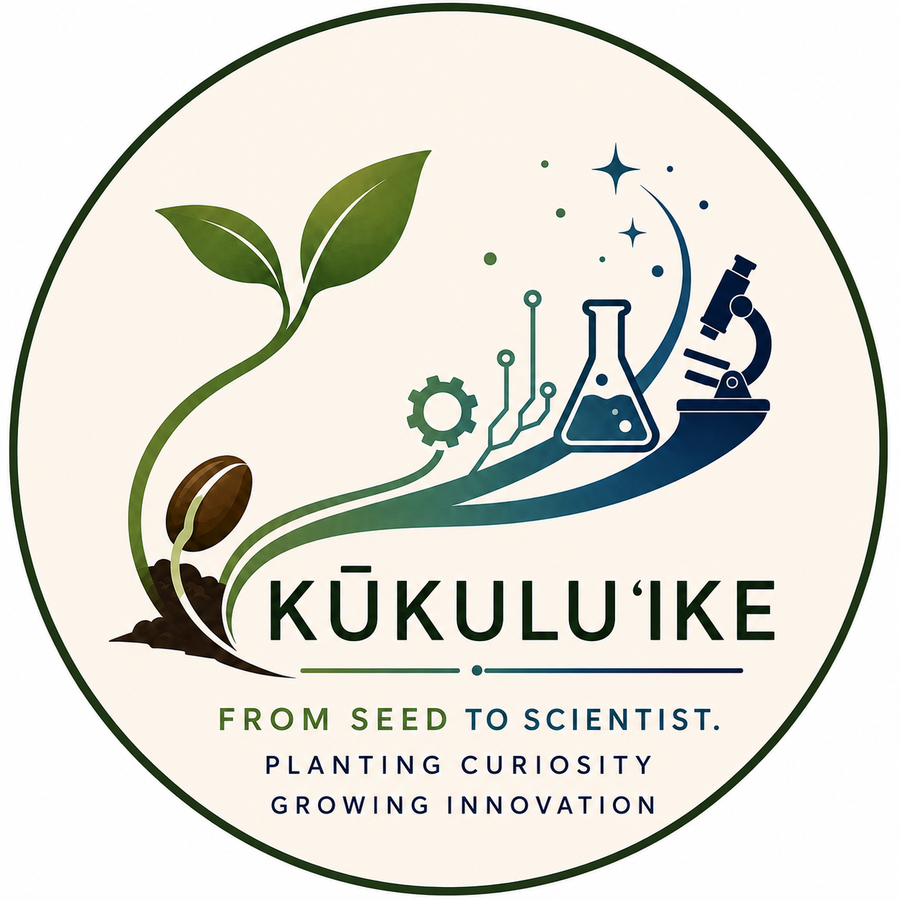
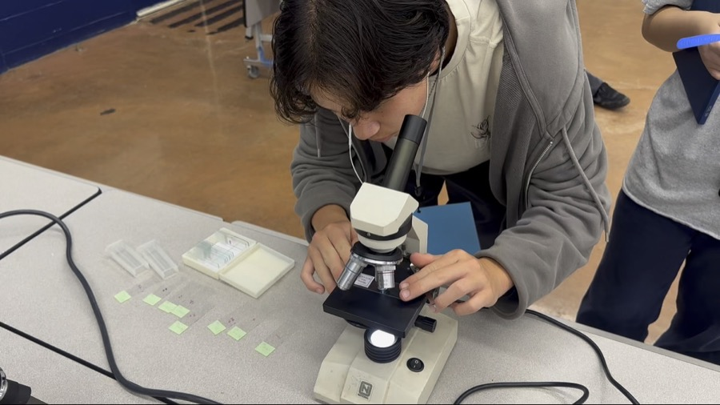
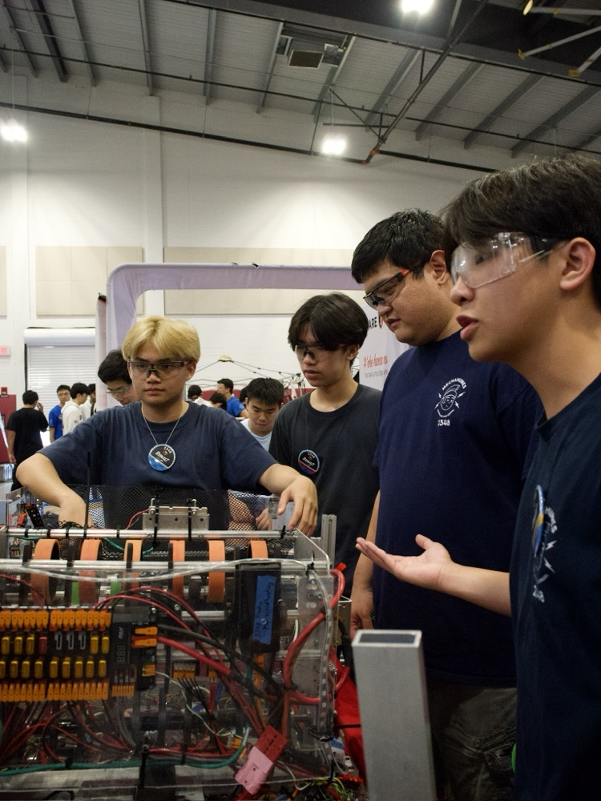
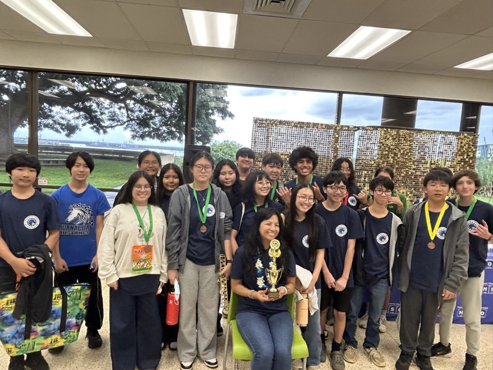

From Seed to Scientist
Kūkulu ʻIke is a student-led initiative that grows STEM curiosity into STEM careers through hands-on workshops and mentorship across Oʻahu.

Every student deserves the chance to see themselves as a scientist or engineer. Here’s how we make that possible, through hands-on workshops, real mentorship, and a clear path from elementary curiosity to high school readiness.

Interactive STEM workshops that let students build, test, and experiment, no lab coat required. From robotics builds to hands-on health training, every session pairs real tools with real guidance. Students leave with new skills and the confidence to keep exploring.

We connect students directly with working scientists and engineers from Oʻahu’s STEM community. These mentors share real-world experience through workshops, Q&A sessions, and ongoing guidance, showing students what a career in STEM actually looks like. It’s mentorship that extends well beyond the classroom.

A clear pathway that helps students discover their passion early. By planting the seed in elementary school, we make the STEM opportunities on this site more accessible to every student, all the way through high school.
Kūkulu ʻIke exists to help keiki see themselves as STEM professionals. Guided by our belief that STEM interest is planted early, we build a continuous pathway from elementary school through high school, connecting students at our partner schools with hands-on workshops, real working scientists and engineers, and the mentorship they need to grow. From seed to scientist, we cultivate curiosity into capability, so that no student’s spark for discovery goes unnoticed or unsupported.
Read Our Full StoryA few especially good fits with deadlines coming up soon. There are 80+ more in the Opportunity Explorer.